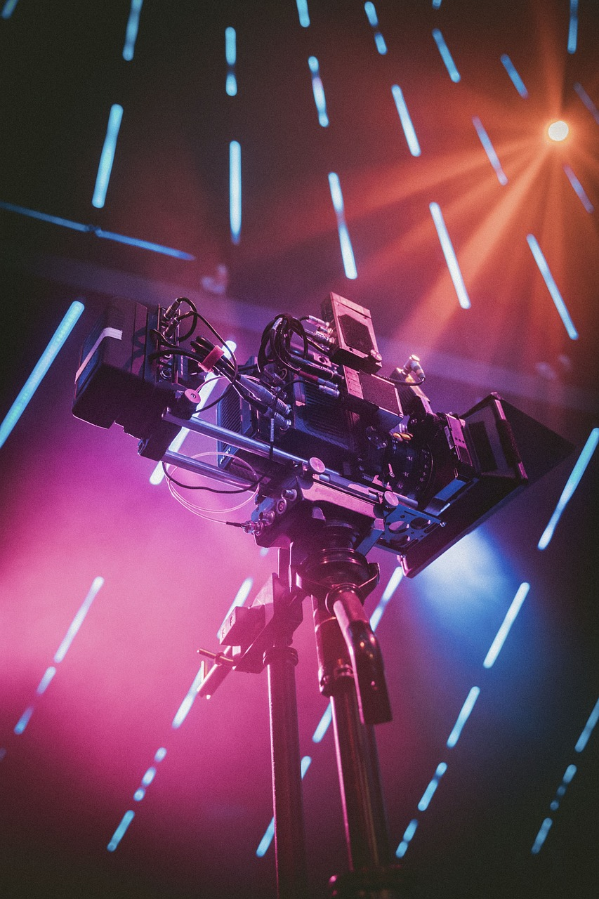

- prvi korak
- metode pri zajemu videoposnetka
Planiranje
Prvi korak
Brez dobrega plana težko nastane nekaj res dobrega, kvalitetnega. Nič drugače ni pri videoprodukciji. Plan je prvi in hkrati najpomembnejši korak pri nastajanju videoposnetka, saj praviloma začne nastajati že tedne, mesece ali celo leta vnaprej, če gre za neke večje dogodke. V prvi fazi je najpomembnejša dobra zgodba, to je ideja, kako bo dogodek prikazan in kaj želimo sporočiti.
Metode pri zajemu videoposnetka
Pri planiranju poznamo improvizirano metodo produkcije, ki jo uporabimo pri produkciji športnih dogodkov. Poznamo pa tudi koncipirano metodo produkcije dogodka. Le-ta se uporablja za načrtovanje večine koncertov, gledaliških iger, komemoracij in podobnih dogodkov. Pri tej fazi najpogosteje sodelujejo producent, scenarist, režiser in asistenti. Skupaj pripravijo programski predlog, ki je osnova za nadaljne delo.